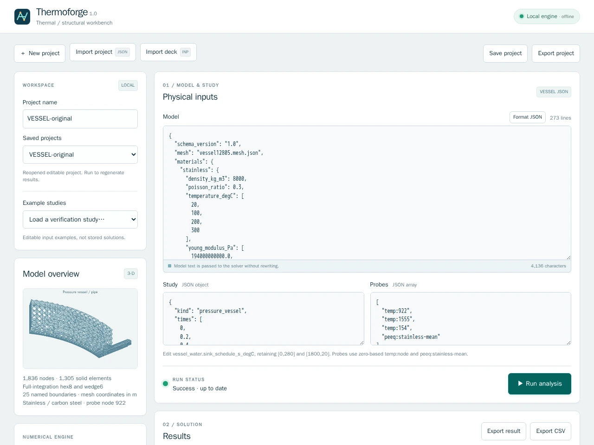

题目要求
交付可离线运行的开源热—结构工作台，支持修改模型、载荷和分析设置，重新求解、保存重开、检查探针和温度场，并导出结果。原题给定五个热—结构工程和三个来自 COMSOL 的研究。

交付可离线运行的开源热—结构工作台，支持修改模型、载荷和分析设置，重新求解、保存重开、检查探针和温度场，并导出结果。原题给定五个热—结构工程和三个来自 COMSOL 的研究。
覆盖瞬态双向热弹性、三维几何非线性、热塑性、接触导热、腔体辐射、温度相关材料，以及压力容器热冲击中热场向历史相关力学计算的传递。
十案事后审计包含两个基础工程及八个 COMSOL Application Gallery 官方公开模型。严格规则要求等价物理输入、原工况与编辑工况对照、真实空间结果及浏览器工作流。现阶段部分原生场、编辑工况和收敛容差尚未补齐，明确缺失的必过产品能力可直接据此判定。
# Build a thermal–structural simulation workbench
Deliver an open-source local application for editing thermal–structural models and studies, running simulations, inspecting their results and saving projects. Run in Chromium offline. Support the five thermal–structural projects and the three COMSOL-derived verification studies supplied under `/app/data`. The request, result, units and tolerances are specified in `/app/data/CONTRACT.md`.
## T1. Required physical capabilities
| Project | Physics to preserve |
| --- | --- |
| H01 COMET quarter plate | Circular hole and symmetry, transient plane strain, temperature-induced stress and mechanical strain-rate feedback in the heat equation, transient temperature and displacement probes. |
| H02 CalculiX beampt | 3-D solid mesh, geometric nonlinearity, temperature-driven elastoplasticity, isotropic hardening, displacement and stress at integration points. |
| H03 CalculiX thermomech | 3-D solid mesh, cavity radiation with exchange between surfaces and absolute-temperature fourth power, coupled steady heating, standalone thermal step and subsequent mechanical equilibrium with state transfer. |
| H04 CalculiX contact9 | 3-D transient dynamics, unilateral mechanical contact with opening and closing, contact conductance and changing active contact set. |
| H05 CalculiX beamt4 | 3-D thermoelastic deformation with tabulated elastic modulus and thermal expansion, initial and reference temperature semantics and prescribed nonuniform nodal temperatures. |
Import the supplied structured project requests, including the original CalculiX `.inp` decks without removing input cards, structures or physical terms. Support edits of values, loads, material constants and identifiers in the demonstrated deck subset. The H01 public mesh retains the original circular-hole approximation. Use editable JSON parameters for H01. Report malformed or unsupported data and solver failures with a diagnostic, leaving successful output empty. Provide the named displacement, stress, temperature and contact observables in the units and times used by the project.
You may integrate the provided open-source CalculiX and FEniCS tools or implement equivalent algorithms. Disclose the engine and version. The app must manage models, editable physical inputs, studies, results and durable projects. Proprietary dependencies, remote solves, fixed-answer files and a wrapper without an editable workbench are out of scope.
## T2. Engineering workflow
Provide these accessible control names. Layout and appearance are open to design.
- `New project`, `Import project` file input for request JSON, and `Import deck` file input for CalculiX `.inp` files. Support typing or pasting a valid input into the blank `Model` field, and editing model and study after import. Show geometry or mesh information in `Model overview` so users can confirm what was submitted.
- Editable `Study` JSON object and `Probes` JSON array in editable text fields. `Run analysis` executes calculation with current settings. In `Run status`, indicate success, failure and whether output is stale. Use a `Result table` with units and named observations and a `Result plot` for transient temperature, displacement or contact traces.
- `Save project` persists editable inputs. A user can reopen one from a `Saved projects` list or dropdown on the same origin after a reload. `Export project`, `Export result` and `Export CSV` download a reopenable request, the actual batch-format result and all samples with units. Changing a value invalidates result exports until a fresh solve succeeds.
## T3. Delivery
Put full source, `LICENSE`, `README.md` and `dependencies.lock` in `/app/output`. Explain installation, usage, physics and known limits. Provide `bash /app/output/launch.sh --host 127.0.0.1 --port PORT` and `bash /app/output/simulate.sh REQUEST.json RESULT.json`. Both entry points run offline using the same engine. Submit regular files and directories without links, at most 6,000 entries and 128 MB total. All mandatory numerical, workflow and delivery checks must pass for reward 1.
A rejected model may exit the batch command with status 0 or 1 if it writes a conforming error result. H01 JSON may be reformatted without changing its values. The provenance hash binds to the exact model text exported for that run.
## T4. Public COMSOL cavity-radiation benchmark
The workbench must also reproduce the public `Radiation in a Cavity` study (Application 447) and support numerical recalculation after physical edits. The editable model and the units for this study are in `/app/data/COMSOL-CAVITY.md`. Import `/app/data/projects/C447.request.json` in both entry points. Use `analysis.kind: "cavity"` for this study. Apply the specified thermal conductivity, independent wall solids, steady conduction, imposed surface fluxes, thermal insulation, fixed temperatures, and diffuse gray surface-to-surface exchange on the interior of a closed cavity. Resolve the spatial temperature variation along each wall. Report inner-wall average temperature and signed integrated normal heat flux for named walls.
In Chromium, show the cavity geometry or mesh with wall identifiers. A user can import and edit a wall's emissivity, run the changed model, inspect observations and their units, save and reopen the changed study, recompute, and export JSON and CSV. Allow formatting changes that preserve the values. Both entry points must run offline without a COMSOL runtime and identify their numerical engine. An error must leave no successful result available. The same implementation must support valid rectangular wall thicknesses, coefficients, and loads beyond the example inputs.
## T5. Public COMSOL fire heating benchmark
Reproduce the published Heating Process verification example for a square cross section heated by convection and radiation. Use `/app/data/projects/FIRE.request.json` and `/app/data/COMSOL-HEATING.md`. The workbench must solve transient conduction with temperature-dependent conductivity, show a time-series plot of center temperature, allow a film coefficient edit and fresh solve, and keep the standard save, reopen and export workflows. Show the cross section or mesh information and identify the center probe.
## COMSOL 12805 pressure vessel thermal shock
Implement the study and result contract in `/app/data/COMSOL-VESSEL.md`. Import `/app/data/projects/VESSEL-original.request.json` and edit the vessel cooling schedule. Support steady heat transfer and pressure preload, the transient thermal field, sequential transfer to a temperature-dependent elastic-plastic model with accumulated state, and offline field inspection, persistence and export. The neutral mesh is `/app/data/vessel12805.mesh.json`. Test schedules have the same endpoints as the original and include other valid intermediate knots. Open-source simulation engines are permitted.
原题 21/21 的 Harbor reward 为 1，产物为 sol62-comsol-pilot-r07c-resume-001。十案严格事后能力审计为 0/100，保留两道基础题的原探针口径时为 20/100。压力容器工程的补充后处理测得最大应力差 14.91 MPa、最低点时间差 120 s。该应力由评测侧计算。完整的十案 COMSOL 原生数值对标仍待完成。
| 公开工程 | 结果 | 验收发现 |
|---|---|---|
| B01 · COMET 四分之一孔板 | 严格未通过 | 原有探针和载荷编辑重算通过，缺温度／位移空间场。 |
| B02 · CalculiX 动态热接触 | 严格未通过 | 原有接触活动数完全一致，缺空间结果场。 |
| 12805 · 压力容器热冲击 | 严格未通过 | 原有温度、塑性检查通过，无法导出官方 41 点线性化应力曲线。 |
| 10476 · 涡轮静叶热应力 | 严格未通过 | 原始四面体导入受限，缺通用温度、位移与应力场。 |
| 14659 · 电子封装接触热阻 | 严格未通过 | 缺热阻扫描、界面热流及空间场输出。 |
| 481 · 贴片电阻热—结构 | 严格未通过 | 缺三维温度、位移和应力场。 |
| 504 · 快速热退火 | 严格未通过 | 缺完整三维瞬态表面辐射与辐照结果。 |
| 80681 · 狭窄间隙辐射 | 严格未通过 | 缺三板空间温度和辐射通量。 |
| 46831 · 多层结构受火 | 严格未通过 | 受火入口限均质截面、常数热容。 |
| 12573 · 三维建筑热桥 | 严格未通过 | 缺空间温度场、表面极值和区域热流积分。 |